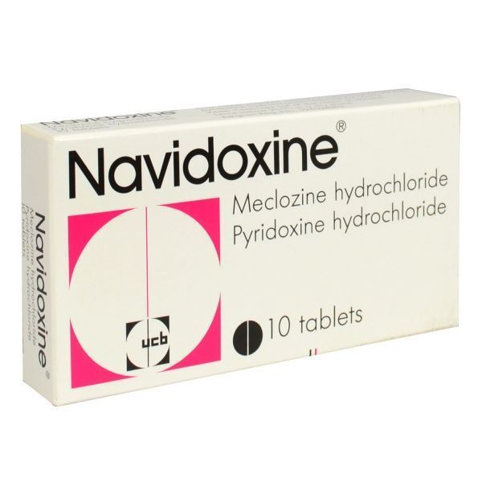

Folic Acid

Folic acid is a type of B vitamin that is normally found in foods such as dried beans, peas, lentils, oranges, whole-wheat products, liver, asparagus, beets, broccoli, brussels sprouts, and spinach. Folic acid helps your body produce and maintain new cells, and also helps prevent changes to DNA that may lead to cancer. As a medication, folic acid is used to treat folic acid deficiency and certain types of anemia (lack of red blood cells) caused by folic acid deficiency.
Dosing
For oral dosage form (tablets): To prevent deficiency, the amount taken by mouth is based on normal daily recommended intakes: Adult and teenage males—150 to 400 micrograms (mcg) per day. Adult and teenage females—150 to 400 mcg per day. Pregnant females—400 to 800 mcg per day. Breast-feeding females—260 to 800 mcg per day.
Side Effects
Along with its needed effects, a medicine may cause some unwanted effects. Although not all of these side effects may occur, if they do occur they may need medical attention. Check with your doctor as soon as possible if any of the following side effects occur while taking folic acid: Rare
- Fever
- general weakness or discomfort
- reddened skin
- shortness of breath
- skin rash or itching
- tightness in chest
- troubled breathing
Navidoxine
Most doctors recommend limiting caffeine during pregnancy, since it can have harmful effects on you and the baby. Cutting back can be tough, though -- especially when you're used to your morning java. For a quick pick-me-up, try nibbling on some fruit. "The natural sugars in fruits like bananas and apples can help lift energy levels," says registered dietitian Frances Largeman-Roth.